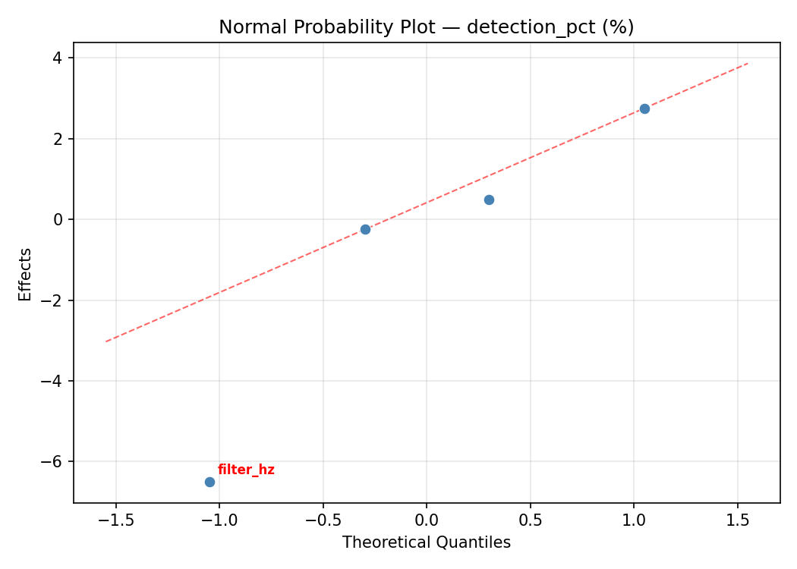
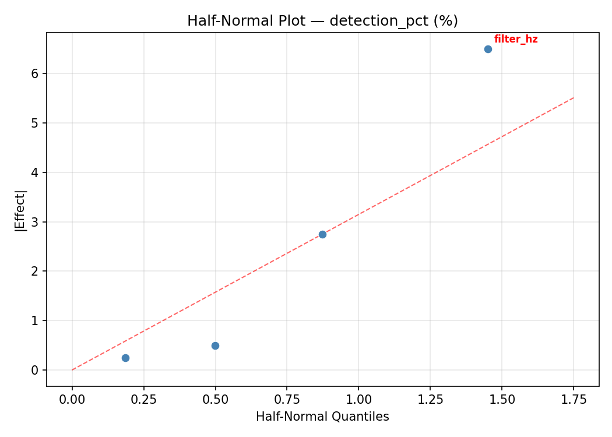
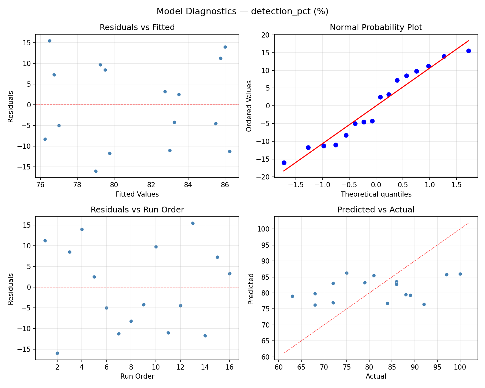
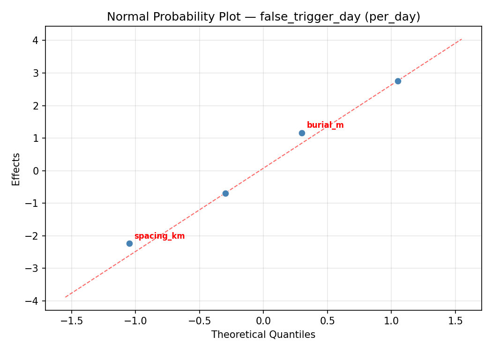
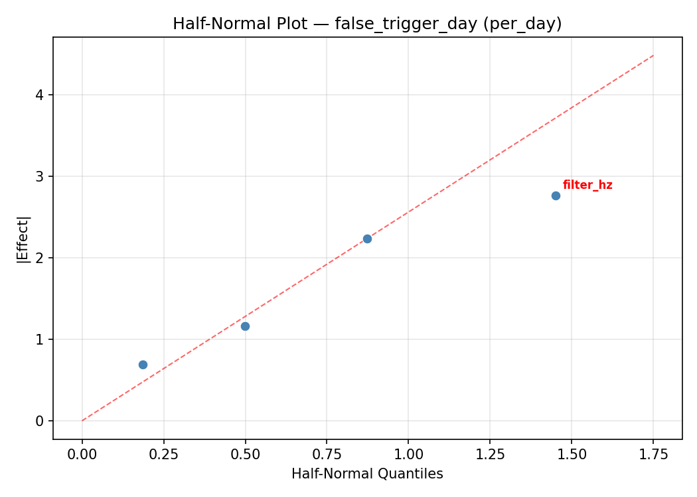
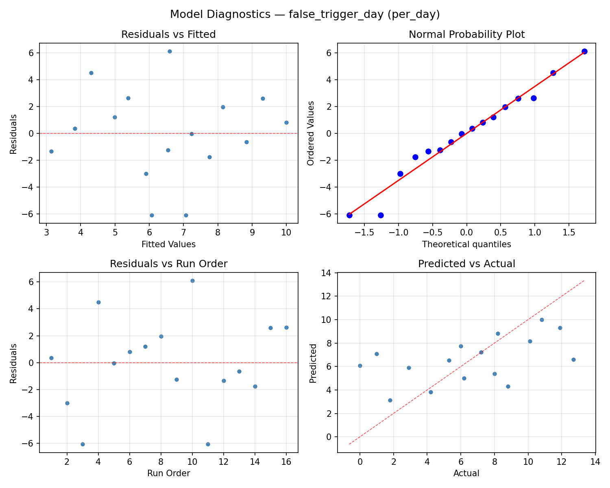

Summary
This experiment investigates seismograph network placement. Full factorial of station spacing, depth of burial, sampling rate, and filter bandwidth to maximize event detection and minimize false triggers.
The design varies 4 factors: spacing km (km), ranging from 5 to 25, burial m (m), ranging from 0 to 3, sample hz (Hz), ranging from 40 to 200, and filter hz (Hz), ranging from 0.5 to 10. The goal is to optimize 2 responses: detection pct (%) (maximize) and false trigger day (per_day) (minimize). Fixed conditions held constant across all runs include sensor = broadband, network size = 8_stations.
A full factorial design was used to explore all 16 possible combinations of the 4 factors at two levels. This guarantees that every main effect and interaction can be estimated independently, at the cost of a larger experiment (16 runs).
Quadratic response surface models were fitted to capture potential curvature and factor interactions. The RSM contour plots below visualize how pairs of factors jointly affect each response.
Key Findings
For detection pct, the most influential factors were burial m (38.8%), spacing km (34.3%), sample hz (22.4%). The best observed value was 100.0 (at spacing km = 5, burial m = 3, sample hz = 200).
For false trigger day, the most influential factors were burial m (32.4%), sample hz (30.9%), filter hz (20.9%). The best observed value was -0.0 (at spacing km = 5, burial m = 3, sample hz = 40).
Recommended Next Steps
- Consider whether any fixed factors should be varied in a future study.
Experimental Setup
Factors
| Factor | Low | High | Unit |
|---|
spacing_km | 5 | 25 | km |
burial_m | 0 | 3 | m |
sample_hz | 40 | 200 | Hz |
filter_hz | 0.5 | 10 | Hz |
Fixed: sensor = broadband, network_size = 8_stations
Responses
| Response | Direction | Unit |
|---|
detection_pct | ↑ maximize | % |
false_trigger_day | ↓ minimize | per_day |
Configuration
{
"metadata": {
"name": "Seismograph Network Placement",
"description": "Full factorial of station spacing, depth of burial, sampling rate, and filter bandwidth to maximize event detection and minimize false triggers"
},
"factors": [
{
"name": "spacing_km",
"levels": [
"5",
"25"
],
"type": "continuous",
"unit": "km"
},
{
"name": "burial_m",
"levels": [
"0",
"3"
],
"type": "continuous",
"unit": "m"
},
{
"name": "sample_hz",
"levels": [
"40",
"200"
],
"type": "continuous",
"unit": "Hz"
},
{
"name": "filter_hz",
"levels": [
"0.5",
"10"
],
"type": "continuous",
"unit": "Hz"
}
],
"fixed_factors": {
"sensor": "broadband",
"network_size": "8_stations"
},
"responses": [
{
"name": "detection_pct",
"optimize": "maximize",
"unit": "%"
},
{
"name": "false_trigger_day",
"optimize": "minimize",
"unit": "per_day"
}
],
"settings": {
"operation": "full_factorial",
"test_script": "use_cases/232_seismograph_placement/sim.sh"
}
}
Experimental Matrix
The Full Factorial Design produces 16 runs. Each row is one experiment with specific factor settings.
| Run | spacing_km | burial_m | sample_hz | filter_hz |
|---|
| 1 | 5 | 3 | 200 | 10 |
| 2 | 25 | 0 | 40 | 10 |
| 3 | 5 | 3 | 40 | 10 |
| 4 | 5 | 3 | 200 | 0.5 |
| 5 | 25 | 3 | 200 | 0.5 |
| 6 | 25 | 0 | 200 | 0.5 |
| 7 | 25 | 3 | 40 | 0.5 |
| 8 | 25 | 0 | 40 | 0.5 |
| 9 | 5 | 0 | 40 | 10 |
| 10 | 5 | 0 | 200 | 0.5 |
| 11 | 25 | 3 | 40 | 10 |
| 12 | 25 | 3 | 200 | 10 |
| 13 | 5 | 3 | 40 | 0.5 |
| 14 | 25 | 0 | 200 | 10 |
| 15 | 5 | 0 | 40 | 0.5 |
| 16 | 5 | 0 | 200 | 10 |
Step-by-Step Workflow
1
Preview the design
$ python doe.py info --config use_cases/232_seismograph_placement/config.json
2
Generate the runner script
$ python doe.py generate --config use_cases/232_seismograph_placement/config.json \
--output use_cases/232_seismograph_placement/results/run.sh --seed 42
3
Execute the experiments
$ bash use_cases/232_seismograph_placement/results/run.sh
4
Analyze results
$ python doe.py analyze --config use_cases/232_seismograph_placement/config.json
5
Get optimization recommendations
$ python doe.py optimize --config use_cases/232_seismograph_placement/config.json
6
Multi-objective optimization
With 2 competing responses, use --multi to find the best compromise via Derringer–Suich desirability.
$ python doe.py optimize --config use_cases/232_seismograph_placement/config.json --multi
7
Generate the HTML report
$ python doe.py report --config use_cases/232_seismograph_placement/config.json \
--output use_cases/232_seismograph_placement/results/report.html
Features Exercised
| Feature | Value |
|---|
| Design type | full_factorial |
| Factor types | continuous (all 4) |
| Arg style | double-dash |
| Responses | 2 (detection_pct ↑, false_trigger_day ↓) |
| Total runs | 16 |
Analysis Results
Generated from actual experiment runs using the DOE Helper Tool.
Response: detection_pct
Top factors: burial_m (38.8%), spacing_km (34.3%), sample_hz (22.4%).
ANOVA
| Source | DF | SS | MS | F | p-value |
|---|
| Source | DF | SS | MS | F | p-value |
| spacing_km | 1 | 132.2500 | 132.2500 | 1.508 | 0.2741 |
| burial_m | 1 | 169.0000 | 169.0000 | 1.927 | 0.2238 |
| sample_hz | 1 | 56.2500 | 56.2500 | 0.641 | 0.4596 |
| filter_hz | 1 | 2.2500 | 2.2500 | 0.026 | 0.8790 |
| spacing_km*burial_m | 1 | 506.2500 | 506.2500 | 5.773 | 0.0614 |
| spacing_km*sample_hz | 1 | 36.0000 | 36.0000 | 0.410 | 0.5499 |
| spacing_km*filter_hz | 1 | 144.0000 | 144.0000 | 1.642 | 0.2563 |
| burial_m*sample_hz | 1 | 272.2500 | 272.2500 | 3.104 | 0.1384 |
| burial_m*filter_hz | 1 | 12.2500 | 12.2500 | 0.140 | 0.7239 |
| sample_hz*filter_hz | 1 | 4.0000 | 4.0000 | 0.046 | 0.8393 |
| Error | 5 | 438.5000 | 87.7000 | | |
| Total | 15 | 1773.0000 | 118.2000 | | |
Pareto Chart

Main Effects Plot

Normal Probability Plot of Effects

Half-Normal Plot of Effects

Model Diagnostics

Response: false_trigger_day
Top factors: burial_m (32.4%), sample_hz (30.9%), filter_hz (20.9%).
ANOVA
| Source | DF | SS | MS | F | p-value |
|---|
| Source | DF | SS | MS | F | p-value |
| spacing_km | 1 | 4.5156 | 4.5156 | 0.182 | 0.6875 |
| burial_m | 1 | 19.1406 | 19.1406 | 0.771 | 0.4202 |
| sample_hz | 1 | 17.4306 | 17.4306 | 0.702 | 0.4404 |
| filter_hz | 1 | 7.9806 | 7.9806 | 0.321 | 0.5953 |
| spacing_km*burial_m | 1 | 21.8556 | 21.8556 | 0.880 | 0.3913 |
| spacing_km*sample_hz | 1 | 20.9306 | 20.9306 | 0.843 | 0.4007 |
| spacing_km*filter_hz | 1 | 3.5156 | 3.5156 | 0.142 | 0.7222 |
| burial_m*sample_hz | 1 | 4.3056 | 4.3056 | 0.173 | 0.6944 |
| burial_m*filter_hz | 1 | 0.3906 | 0.3906 | 0.016 | 0.9051 |
| sample_hz*filter_hz | 1 | 0.2756 | 0.2756 | 0.011 | 0.9202 |
| Error | 5 | 124.1731 | 24.8346 | | |
| Total | 15 | 224.5144 | 14.9676 | | |
Pareto Chart

Main Effects Plot

Normal Probability Plot of Effects

Half-Normal Plot of Effects

Model Diagnostics

Response Surface Plots
3D surfaces fitted with quadratic RSM. Red dots are observed data points.
detection pct burial m vs filter hz

detection pct burial m vs sample hz

detection pct sample hz vs filter hz

detection pct spacing km vs burial m

detection pct spacing km vs filter hz

detection pct spacing km vs sample hz

false trigger day burial m vs filter hz

false trigger day burial m vs sample hz

false trigger day sample hz vs filter hz

false trigger day spacing km vs burial m

false trigger day spacing km vs filter hz

false trigger day spacing km vs sample hz

Multi-Objective Optimization
When responses compete, Derringer–Suich desirability finds the best compromise.
Each response is scaled to a 0–1 desirability, then combined via a weighted geometric mean.
Overall Desirability
D = 0.7819
Per-Response Desirability
| Response | Weight | Desirability | Predicted | Dir |
|---|
detection_pct |
1.5 |
|
97.00 0.8808 97.00 % |
↑ |
false_trigger_day |
1.0 |
|
4.20 0.6539 4.20 per_day |
↓ |
Recommended Settings
| Factor | Value |
|---|
spacing_km | 25 km |
burial_m | 0 m |
sample_hz | 40 Hz |
filter_hz | 10 Hz |
Source: from observed run #1
Trade-off Summary
Sacrifice = how much worse than single-objective best.
| Response | Predicted | Best Observed | Sacrifice |
|---|
false_trigger_day | 4.20 | -0.00 | +4.20 |
Top 3 Runs by Desirability
| Run | D | Factor Settings |
|---|
| #3 | 0.7413 | spacing_km=25, burial_m=0, sample_hz=40, filter_hz=0.5 |
| #4 | 0.6201 | spacing_km=5, burial_m=3, sample_hz=40, filter_hz=10 |
Model Quality
| Response | R² | Type |
|---|
false_trigger_day | 0.3639 | linear |
Full Multi-Objective Output
============================================================
MULTI-OBJECTIVE OPTIMIZATION
Method: Derringer-Suich Desirability Function
============================================================
Overall desirability: D = 0.7819
Response Weight Desirability Predicted Direction
---------------------------------------------------------------------
detection_pct 1.5 0.8808 97.00 % ↑
false_trigger_day 1.0 0.6539 4.20 per_day ↓
Recommended settings:
spacing_km = 25 km
burial_m = 0 m
sample_hz = 40 Hz
filter_hz = 10 Hz
(from observed run #1)
Trade-off summary:
detection_pct: 97.00 (best observed: 100.00, sacrifice: +3.00)
false_trigger_day: 4.20 (best observed: -0.00, sacrifice: +4.20)
Model quality:
detection_pct: R² = 0.3357 (linear)
false_trigger_day: R² = 0.3639 (linear)
Top 3 observed runs by overall desirability:
1. Run #1 (D=0.7819): spacing_km=25, burial_m=0, sample_hz=40, filter_hz=10
2. Run #3 (D=0.7413): spacing_km=25, burial_m=0, sample_hz=40, filter_hz=0.5
3. Run #4 (D=0.6201): spacing_km=5, burial_m=3, sample_hz=40, filter_hz=10
Full Analysis Output
=== Main Effects: detection_pct ===
Factor Effect Std Error % Contribution
--------------------------------------------------------------
burial_m 6.5000 2.7180 38.8%
spacing_km 5.7500 2.7180 34.3%
sample_hz 3.7500 2.7180 22.4%
filter_hz -0.7500 2.7180 4.5%
=== ANOVA Table: detection_pct ===
Source DF SS MS F p-value
-----------------------------------------------------------------------------
spacing_km 1 132.2500 132.2500 1.508 0.2741
burial_m 1 169.0000 169.0000 1.927 0.2238
sample_hz 1 56.2500 56.2500 0.641 0.4596
filter_hz 1 2.2500 2.2500 0.026 0.8790
spacing_km*burial_m 1 506.2500 506.2500 5.773 0.0614
spacing_km*sample_hz 1 36.0000 36.0000 0.410 0.5499
spacing_km*filter_hz 1 144.0000 144.0000 1.642 0.2563
burial_m*sample_hz 1 272.2500 272.2500 3.104 0.1384
burial_m*filter_hz 1 12.2500 12.2500 0.140 0.7239
sample_hz*filter_hz 1 4.0000 4.0000 0.046 0.8393
Error 5 438.5000 87.7000
Total 15 1773.0000 118.2000
=== Interaction Effects: detection_pct ===
Factor A Factor B Interaction % Contribution
------------------------------------------------------------------------
spacing_km burial_m -11.2500 36.0%
burial_m sample_hz 8.2500 26.4%
spacing_km filter_hz -6.0000 19.2%
spacing_km sample_hz -3.0000 9.6%
burial_m filter_hz 1.7500 5.6%
sample_hz filter_hz 1.0000 3.2%
=== Summary Statistics: detection_pct ===
spacing_km:
Level N Mean Std Min Max
------------------------------------------------------------
25 8 78.3750 11.6734 63.0000 100.0000
5 8 84.1250 9.9058 68.0000 97.0000
burial_m:
Level N Mean Std Min Max
------------------------------------------------------------
0 8 78.0000 11.8804 63.0000 97.0000
3 8 84.5000 9.3808 68.0000 100.0000
sample_hz:
Level N Mean Std Min Max
------------------------------------------------------------
200 8 79.3750 11.3507 63.0000 97.0000
40 8 83.1250 10.7894 68.0000 100.0000
filter_hz:
Level N Mean Std Min Max
------------------------------------------------------------
0.5 8 81.6250 8.3996 68.0000 92.0000
10 8 80.8750 13.5060 63.0000 100.0000
=== Main Effects: false_trigger_day ===
Factor Effect Std Error % Contribution
--------------------------------------------------------------
burial_m 2.1875 0.9672 32.4%
sample_hz 2.0875 0.9672 30.9%
filter_hz 1.4125 0.9672 20.9%
spacing_km 1.0625 0.9672 15.7%
=== ANOVA Table: false_trigger_day ===
Source DF SS MS F p-value
-----------------------------------------------------------------------------
spacing_km 1 4.5156 4.5156 0.182 0.6875
burial_m 1 19.1406 19.1406 0.771 0.4202
sample_hz 1 17.4306 17.4306 0.702 0.4404
filter_hz 1 7.9806 7.9806 0.321 0.5953
spacing_km*burial_m 1 21.8556 21.8556 0.880 0.3913
spacing_km*sample_hz 1 20.9306 20.9306 0.843 0.4007
spacing_km*filter_hz 1 3.5156 3.5156 0.142 0.7222
burial_m*sample_hz 1 4.3056 4.3056 0.173 0.6944
burial_m*filter_hz 1 0.3906 0.3906 0.016 0.9051
sample_hz*filter_hz 1 0.2756 0.2756 0.011 0.9202
Error 5 124.1731 24.8346
Total 15 224.5144 14.9676
=== Interaction Effects: false_trigger_day ===
Factor A Factor B Interaction % Contribution
------------------------------------------------------------------------
spacing_km burial_m -2.3375 32.6%
spacing_km sample_hz -2.2875 31.9%
burial_m sample_hz 1.0375 14.5%
spacing_km filter_hz 0.9375 13.1%
burial_m filter_hz 0.3125 4.4%
sample_hz filter_hz 0.2625 3.7%
=== Summary Statistics: false_trigger_day ===
spacing_km:
Level N Mean Std Min Max
------------------------------------------------------------
25 8 6.0375 3.5900 -0.0000 11.9000
5 8 7.1000 4.3058 1.0000 12.7000
burial_m:
Level N Mean Std Min Max
------------------------------------------------------------
0 8 5.4750 4.4660 -0.0000 12.7000
3 8 7.6625 3.0650 1.8000 11.9000
sample_hz:
Level N Mean Std Min Max
------------------------------------------------------------
200 8 5.5250 4.2814 -0.0000 12.7000
40 8 7.6125 3.3545 1.0000 11.9000
filter_hz:
Level N Mean Std Min Max
------------------------------------------------------------
0.5 8 5.8625 4.8332 -0.0000 12.7000
10 8 7.2750 2.7520 2.9000 10.8000
Optimization Recommendations
=== Optimization: detection_pct ===
Direction: maximize
Best observed run: #4
spacing_km = 5
burial_m = 3
sample_hz = 200
filter_hz = 10
Value: 100.0
RSM Model (linear, R² = 0.6626, Adj R² = 0.5399):
Coefficients:
intercept +81.2500
spacing_km -3.1250
burial_m +2.1250
sample_hz +7.6250
filter_hz +1.0000
RSM Model (quadratic, R² = 0.8091, Adj R² = -1.8638):
Coefficients:
intercept +16.2500
spacing_km -3.1250
burial_m +2.1250
sample_hz +7.6250
filter_hz +1.0000
spacing_km*burial_m +2.2500
spacing_km*sample_hz -1.7500
spacing_km*filter_hz -0.8750
burial_m*sample_hz +1.2500
burial_m*filter_hz +1.1250
sample_hz*filter_hz -2.1250
spacing_km^2 +16.2500
burial_m^2 +16.2500
sample_hz^2 +16.2500
filter_hz^2 +16.2500
Curvature analysis:
spacing_km coef=+16.2500 convex (has a minimum)
burial_m coef=+16.2500 convex (has a minimum)
sample_hz coef=+16.2500 convex (has a minimum)
filter_hz coef=+16.2500 convex (has a minimum)
Notable interactions:
spacing_km*burial_m coef=+2.2500 (synergistic)
sample_hz*filter_hz coef=-2.1250 (antagonistic)
spacing_km*sample_hz coef=-1.7500 (antagonistic)
burial_m*sample_hz coef=+1.2500 (synergistic)
burial_m*filter_hz coef=+1.1250 (synergistic)
spacing_km*filter_hz coef=-0.8750 (antagonistic)
Predicted optimum (from linear model, at observed points):
spacing_km = 5
burial_m = 3
sample_hz = 200
filter_hz = 10
Predicted value: 95.1250
Surface optimum (via L-BFGS-B, linear model):
spacing_km = 5
burial_m = 3
sample_hz = 200
filter_hz = 10
Predicted value: 95.1250
Model quality: Moderate fit — use predictions directionally, not precisely.
Factor importance:
1. sample_hz (effect: -15.2, contribution: 55.0%)
2. spacing_km (effect: 6.2, contribution: 22.5%)
3. burial_m (effect: 4.2, contribution: 15.3%)
4. filter_hz (effect: 2.0, contribution: 7.2%)
=== Optimization: false_trigger_day ===
Direction: minimize
Best observed run: #11
spacing_km = 5
burial_m = 3
sample_hz = 40
filter_hz = 10
Value: -0.0
RSM Model (linear, R² = 0.2116, Adj R² = -0.0751):
Coefficients:
intercept +6.5688
spacing_km +1.3812
burial_m -0.2312
sample_hz +0.9563
filter_hz +0.3062
RSM Model (quadratic, R² = 0.4561, Adj R² = -7.1588):
Coefficients:
intercept +1.3138
spacing_km +1.3813
burial_m -0.2312
sample_hz +0.9563
filter_hz +0.3063
spacing_km*burial_m +0.2062
spacing_km*sample_hz -0.9562
spacing_km*filter_hz +0.7938
burial_m*sample_hz -0.8187
burial_m*filter_hz +0.5313
sample_hz*filter_hz +0.9438
spacing_km^2 +1.3138
burial_m^2 +1.3138
sample_hz^2 +1.3138
filter_hz^2 +1.3138
Curvature analysis:
spacing_km coef=+1.3138 convex (has a minimum)
burial_m coef=+1.3138 convex (has a minimum)
sample_hz coef=+1.3138 convex (has a minimum)
filter_hz coef=+1.3138 convex (has a minimum)
Notable interactions:
spacing_km*sample_hz coef=-0.9562 (antagonistic)
sample_hz*filter_hz coef=+0.9438 (synergistic)
burial_m*sample_hz coef=-0.8187 (antagonistic)
spacing_km*filter_hz coef=+0.7938 (synergistic)
burial_m*filter_hz coef=+0.5313 (synergistic)
Predicted optimum (from linear model, at observed points):
spacing_km = 25
burial_m = 0
sample_hz = 200
filter_hz = 10
Predicted value: 9.4438
Surface optimum (via L-BFGS-B, linear model):
spacing_km = 5
burial_m = 3
sample_hz = 40
filter_hz = 0.5
Predicted value: 3.6938
Model quality: Weak fit — consider adding center points or using a different design.
Factor importance:
1. spacing_km (effect: -2.8, contribution: 48.0%)
2. sample_hz (effect: -1.9, contribution: 33.3%)
3. filter_hz (effect: 0.6, contribution: 10.7%)
4. burial_m (effect: -0.5, contribution: 8.0%)